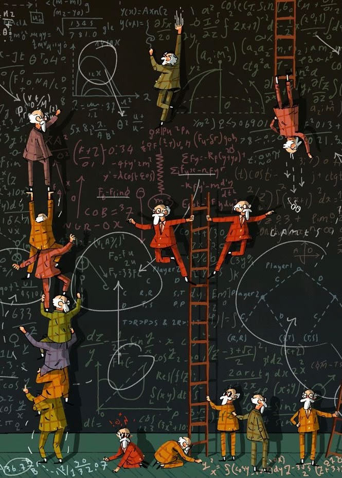

Jornada do Ensino Médio
Ciências Humanas
Durante meu ensino médio, as disciplinas de História, Geografia, Sociologia e Filosofia me ajudaram a desenvolver o pensamento crítico, a interpretar informações, compreender as transformações da sociedade e analisar diferentes situações. Esses conhecimentos contribuíram para minha capacidade de entender problemas e pensar em soluções, algo essencial na lógica da programação.
Ciências da Natureza
Com Biologia, Química e Física, desenvolvi minha capacidade de observação, análise e resolução de problemas. Aprendi a relacionar informações, trabalhar com fórmulas e compreender processos, habilidades que utilizo para entender a lógica por trás dos códigos e organizar soluções em etapas.

Matemática
A Matemática me ajudou diretamente no desenvolvimento do raciocínio lógico, na identificação de padrões, na realização de cálculos e na resolução de problemas. Esses conhecimentos facilitaram minha compreensão de algoritmos, condições, variáveis e estruturas de repetição, que fazem parte da lógica da programação.
Linguagens
As disciplinas de Português, Inglês, Artes e Educação Física contribuíram para minha interpretação, comunicação e criatividade. Aprendi a organizar melhor minhas ideias, compreender termos técnicos em inglês, pensar em diferentes possibilidades e trabalhar em equipe, habilidades importantes para desenvolver projetos e programas.